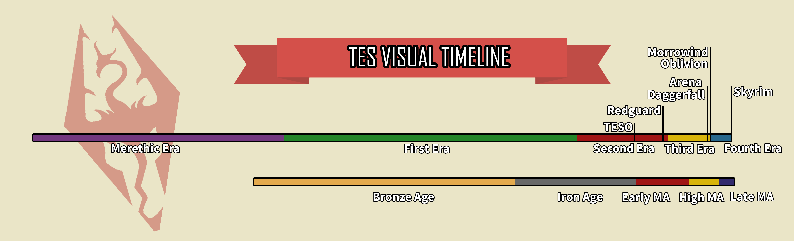

Welcome to The Elder Scrolls Timeline Page
The timeline and history of The Elder Scrolls is long and complex. The dawn era was before the creation of Mundus, during the time of the two original spirits: Anu and Padomay. They existed in the realm of Aetherius and they created the universe, the aurbis. This era ended with the death of the the co-main creator of the mortal realm of Mundus, Lorkhan. The Merethic era, beginning in 2500ME, followed the dawn era and it was a golden age for the Aldmer, who were created by the old Ehlnofey during this time. The ehlnofey, or earth bones, are spiritual remnants of Lorkhan in Mundus. Some of the first humans, in particular the Nedes, were wandering ehlnofey. At the end of the dawn era, Lorkhan's heart fell into Mundus and landed in northern central Morrowind and created the vast Red Mountain of Vvardenfell. During the Merethic Era, the Aldmer Ayleids establish a vast empire on Tamriel. The Merethic era ends and the first modern era begins with the founding of the Camoran dynasty of Valenwood's Bosmer king Eplear Camoran. With the beginning of the first era, the burgeoning races of men began to shift the balance of cultural and political power in their favor. Gradually over the course of this era, mankind began to migrate to and earn their place in Tamriel and stand up to the oppressive elven races. During this era, the first human empire, the Alessian empire is formed following the Alessian Rebellion in Cyrodiil, the heart of the Ayleid empire. This empire would later become the second empire, the Reman Empire under emperor Reman Cyrodiil after he defeated the extracontinental Akaviri invaders and incorporated High Rock and Skyrim into the second empire of man. The first era ended 2920 years after its start with the assassination of the Reman family by the Morag Tong. The second era began with an interregnum period in the Cyrodiilic empire and the destabilization of Tamriel. The continent descended into a four sided war called the Alliance War between the Daggerfall Covenant of Daggerfall, Hammerfell and Orsinium, the Ebonheart Pact of Skyrim, Morrowind and Argonia (Black Marsh) and the First Aldmeri Dominion of the Summerset Isles, Elsweyr and Valenwood. All of those factions were attacking a weakened Cyrodiil in seperate bids for power, glory and loot. The planemeld, an invasion of Tamriel by the daedric forces of Molag Bal, also happened concurrently with the Alliance War. These circumstances led to the deaths of many hundreds of thousands of men, mer and beastfolk. Following the chaos of the first half of the second era, a man named Tiber Septim, a dragonborn, usurped the imperial throne from Cuhlecain during his efforts to unify Cyrodiil. This man would conquer all of Tamriel and unite it under the third empire of man and end the long interregnum in the empire over the latter course of the era. Tiber Septim would give his name to a new dynasty of Cyrodiilic emperors, the Septims. He would also ascend to godhood and become the ninth divine upon his death. The third era begins with the founding of the Septim empire, with the second era ending in year 2E 896. The third era began with populist revolts against imperial authority in Morrowind and Black Marsh, these were crushed by the Septim dynasty. There was also a "dragon break", a moment when time stands still in the warp of the west. This era sees the return of the Nerevarine and the rise of Dagoth-Ur. Mehrunes Dagon invades Tamriel during this era, causing an oblivion crisis. The followers of Mehrunes Dagon, the Mythic Dawn, assassinate emperor Uriel Septim VII shortly before the invasion, ending the legitimate Septim dynasty and temporarily snuffing out the dragon fires that seperate mundus from the planes of oblivion. This allowed for Mehrunes Dagon to open huge oblivion gates and spill his vast armies of dremora into mundus. With the death of Martin Septim and the end of the long and glorious Septim dynasty, the third era ended in 3E 433 and the fourth era began. With the start of the fourth era, the third Aldmeri Dominion made a massive resurgence in power at the same time that the Mede dynasty rose to power in the third empire of man in Cyrodiil. This leads to a great conflict known as the Great War which the Third Aldmeri Dominion won and forced the empire to sign the "White-Gold Concordat" which banned the worship of Talos, Tiber Septim in his apotheosized form. This travesty forced Talos worship underground and caused the Skyrim Civil War in which the stormcloaks under Jarl Ulfric Stormcloak revolted against the empire to keep their rights to worship their patron god, Talos. This coincided with the return of the dragons to Tamriel and the dragon crisis, along with the return of a dragonborn named Miraak to Solstheim (northeast of Skyrim, northwest of Morrowind). Below is a breakdown of the timeline into eras and the times in which the games take place.

I have also included below a helpful lore explanation deep dive video about the Merethic era. It is quite informative. I've also included some Elven music to relax to as you peruse the site.